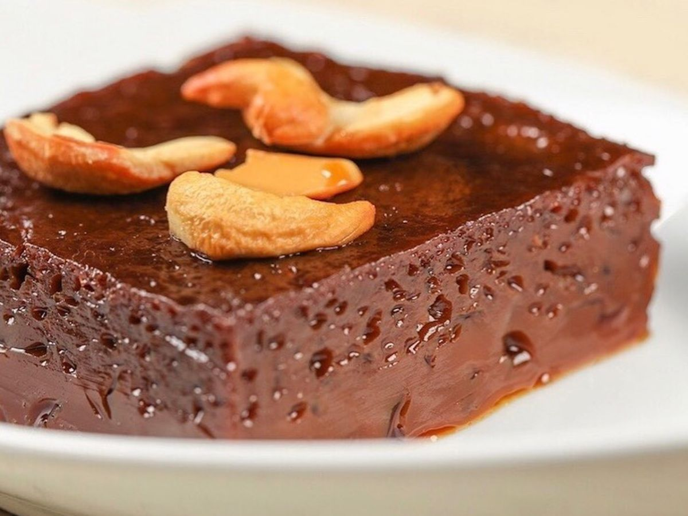

Watalappam

Description
While rice and curry is probably the best-known classic Sri Lankan dish, there’s one treat popular in the country that’s much more iconic: watalappan.
Watalappan is a sumptuous custard dessert that’s quintessentially Sri Lankan. It’s made with coconut milk, eggs, a type of sugar called jaggery, and a hint of spices such as cardamom, nutmeg, and cloves. The mixture is usually steamed for 45 minutes to one hour using a clay furnace or pressure cooker and is glazed with palm-sugar caramel
Ingredients
- Coconut Milk
- Kithul Jaggery
- Eggs
- Pinch of salt
- Spices(cardamom, cinnamon,nutmeg, and cloves)
- 1/2 teaspoon o vanilla extract-
Steps
- According to the color of the sugar you use, the color of Watalappan will be different. If you like your lighter-colored custard, use lighter color sugars
- If you like a richer version of custard with a spongy texture, add an extra one or two egg yolks
- You can also replace half of the thick coconut milk with coconut cream to make a richer custard
- The whole spices add a delicate note of aroma and flavor but ground spices add a strong taste and aroma, so make sure to add them in small amounts
- A tiny amount of spices enhance the flavor and aroma but if you add too much, especially nutmeg, they will ruin the taste of your Watalappan
- The consistency of the custard mixture is very important. It should not be too runny. Use thick coconut milk and/or coconut cream and do not use too much water when making the sugar syrup
- Do not over-whisk your eggs as it will result in a pudding-like texture. Wattalapm should have a texture that has a lot of holes inside filled with jaggery syrup once steamed
- Do not overbake. if you use your oven to make it, bake it at a low temperature until just set. Baking it in a water bath is essential to get the right texture
- If you use a steamer, steam on a medium-high flame which will make it rise well and create a holes-like texture inside
- Steaming time/baking time depends on the mold you use. If it is a deep one it takes more time and if it is a flat one like a baking tray, it takes less time